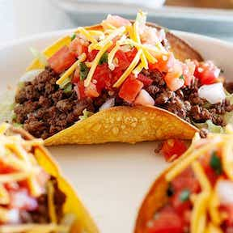

These are ranked number one because the crispyness of the shell combined with all the flavors from the pico de guio, guac, and ground beef is tied together in multiple delicious bites. On a scale of 1 to 10 I would probably rate these a 9.8/10. Perfect flavors and great for family dinners.
